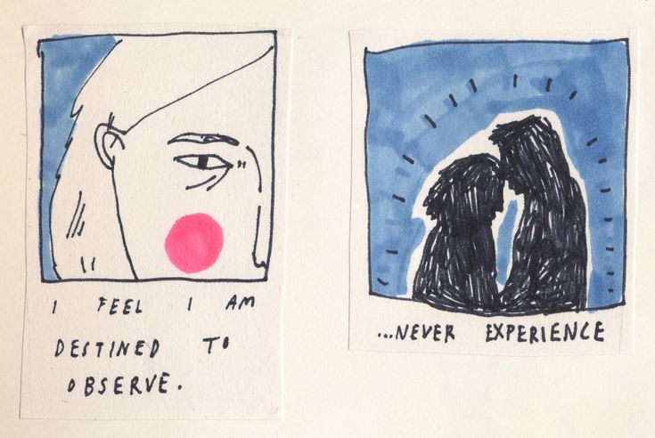
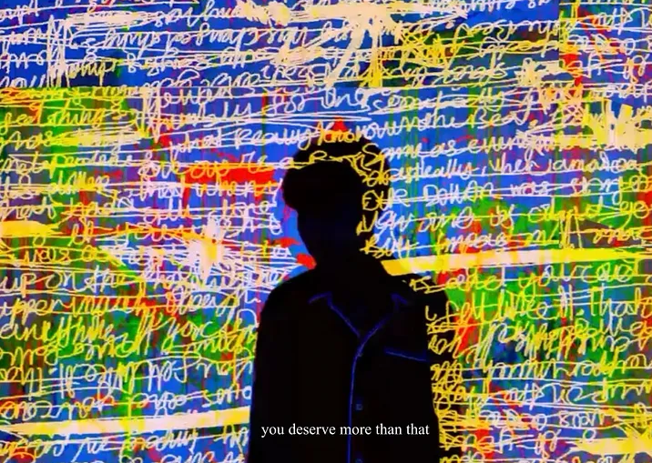

2 December, 2024 by urkaive
biggest fear
Some people might fear spiders, snakes, or heights, dark, but there’s another fear dwelling within me, not easily grasped by the senses.
Read More
17 May, 2024 by thekidultwriter
Cheers to Youth, Cheers to Life.
I trapped my inner child in the past, however, the reality is I can always take her with me.
Read More

10 July, 2024 by cher
Do you ACTUALLY want it, or do you want others to see you having it?
“The things we can’t have often become the things we obsess over.”
Read More

23 November, 2024 by life in letters
Don’t Let Someone’s Emotional Inconsistency Make You Addicted to Temporary Highs and Constant Lows
Don’t let the crumbs of affection make you forget you deserve the whole feast.
Read More